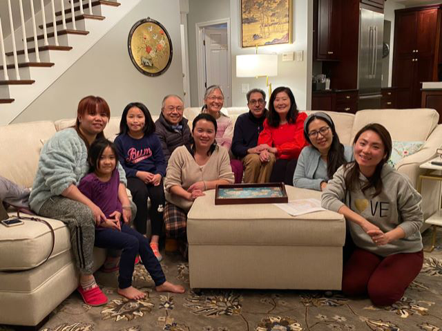

喜樂團契
Joyful Fellowship
← 返回團契列表 Back to Ministries
喜樂團契
Joyful Fellowship
「要常常喜樂，不住地禱告，凡事謝恩，因為這是神在基督耶穌裡向你們所定的旨意。」
[1 Thessalonians 5:16-18] Rejoice always, pray continually, give thanks in all circumstances; for this is God's will for you in Christ Jesus.
— 帖撒羅尼迦前書 1 Thessalonians 5:16–18
喜樂團契是一群充滿喜樂的成員，透過查經、分享和禱告彼此建立、互相學習。聚會分享以普通話為主，歡迎所有人參與。
The Joyful Fellowship is a group of joyful members who come together to build each other up and learn from one another through Bible study, sharing, and prayer. Fellowship sharing is primarily conducted in Mandarin, and all are welcome to participate.
♥ 聚會時間：每週五晚上七時三十分 ♥
♥ Meeting Time: Every Friday evening at 7:30 PM ♥
團契相片集
Fellowship Gallery

線上敬拜
Join Us Online
無法親自出席？線上觀看直播或隨時收看錄影。
Can't make it in person? Watch our services live or access recordings anytime.